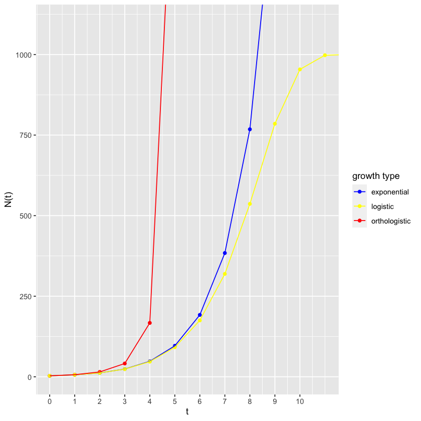

4. Modeling a single population¶
r <- 1
s <- 0
dt <- 1
t <- 0
N <- 3
timeSteps <- 14
population <- data.frame(time = integer(), exponential = integer())
for(i in 1:timeSteps) {
population[i, ] = c(t, N)
dN <- (r + s * N) * N * dt
N <- N + dN
t <- t + dt
}
population
| time | exponential | |
|---|---|---|
| <dbl> | <dbl> | |
| 1 | 0 | 3 |
| 2 | 1 | 6 |
| 3 | 2 | 12 |
| 4 | 3 | 24 |
| 5 | 4 | 48 |
| 6 | 5 | 96 |
| 7 | 6 | 192 |
| 8 | 7 | 384 |
| 9 | 8 | 768 |
| 10 | 9 | 1536 |
| 11 | 10 | 3072 |
| 12 | 11 | 6144 |
| 13 | 12 | 12288 |
| 14 | 13 | 24576 |
Orthologistic:
N <- 3 # re-initialize population size
t <- 0
s <- 0.05 # note: s has changed and the other values are the same
for(i in 1:timeSteps)
{
population[i, "orthologistic"] <- N
dN <- (r + s * N) * N * dt
N <- N + dN
t <- t + dt
}
population[,c("time", "orthologistic")]
| time | orthologistic | |
|---|---|---|
| <dbl> | <dbl> | |
| 1 | 0 | 3.000000e+00 |
| 2 | 1 | 6.450000e+00 |
| 3 | 2 | 1.498012e+01 |
| 4 | 3 | 4.118046e+01 |
| 5 | 4 | 1.671524e+02 |
| 6 | 5 | 1.731301e+03 |
| 7 | 6 | 1.533328e+05 |
| 8 | 7 | 1.175854e+09 |
| 9 | 8 | 6.913168e+16 |
| 10 | 9 | 2.389595e+32 |
| 11 | 10 | 2.855082e+63 |
| 12 | 11 | 4.075745e+125 |
| 13 | 12 | 8.305850e+249 |
| 14 | 13 | Inf |
suppressPackageStartupMessages(library(tidyverse))
pivot_longer(population, !time, names_to = "growth type", values_to = "N") %>%
ggplot(aes(x=time, y=N, color=`growth type`)) + geom_point() + geom_line() +
coord_cartesian(ylim=c(0, 1100), xlim=c(0,11)) + #limits of x and y axis, allows for out of bounds line
scale_color_manual(values = c("blue", "red")) +
xlab("t") + #label for x axis
ylab("N(t)") + #label for y axis
scale_x_continuous(breaks=c(0,1,2,3,4,5,6,7,8,9,10)) + #tick labels for x axis
scale_y_continuous(breaks=c(0,250,500,750,1000)) #tick labels for y axis

Orthologistic growth contrasted with exponential growth.
r <- 1
s <- -0.001
dt <- 1
t <- 0
N <- 3
for(i in 1:timeSteps)
{
population[i, "logistic"] <- N
dN <- (r + s * N) * N * dt
N <- N + dN
t <- t + dt
}
population[,c("time", "logistic")]
| time | logistic | |
|---|---|---|
| <dbl> | <dbl> | |
| 1 | 0 | 3.00000 |
| 2 | 1 | 5.99100 |
| 3 | 2 | 11.94611 |
| 4 | 3 | 23.74951 |
| 5 | 4 | 46.93497 |
| 6 | 5 | 91.66706 |
| 7 | 6 | 174.93126 |
| 8 | 7 | 319.26158 |
| 9 | 8 | 536.59520 |
| 10 | 9 | 785.25599 |
| 11 | 10 | 953.88501 |
| 12 | 11 | 997.87341 |
| 13 | 12 | 999.99548 |
| 14 | 13 | 1000.00000 |
pivot_longer(population, !time, names_to = "growth type", values_to = "N") %>%
ggplot(aes(x=time, y=N, color=`growth type`)) + geom_point() + geom_line() +
coord_cartesian(ylim=c(0, 1100), xlim=c(0,11)) + #limits of x and y axis, allows for out of bounds line
scale_color_manual(values = c("blue", "yellow","red")) +
xlab("t") + #label for x axis
ylab("N(t)") + #label for y axis
scale_x_continuous(breaks=c(0,1,2,3,4,5,6,7,8,9,10)) + #tick labels for x axis
scale_y_continuous(breaks=c(0,250,500,750,1000)) #tick labels for y axis
